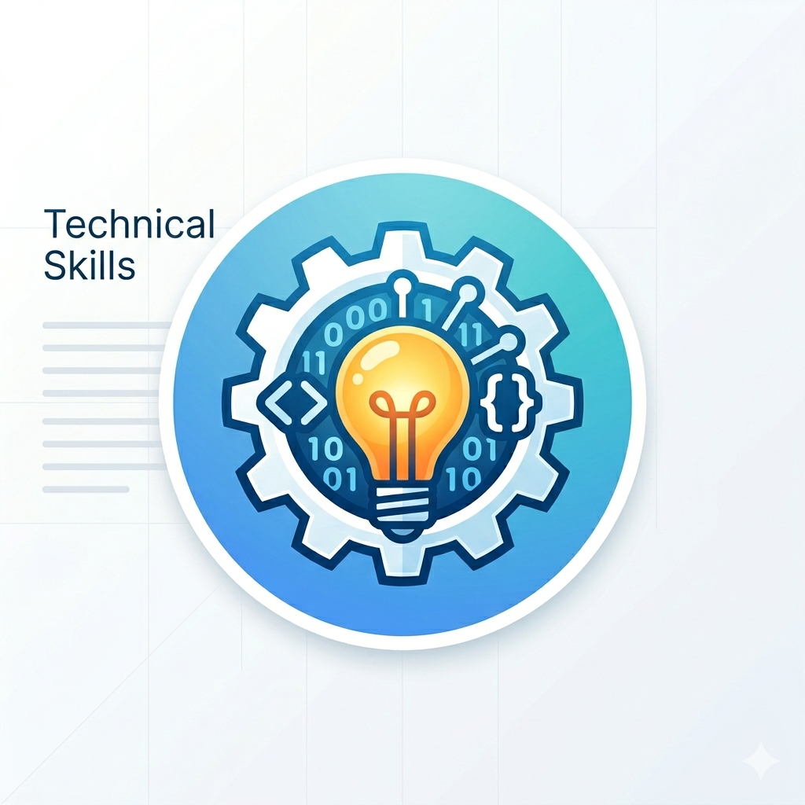
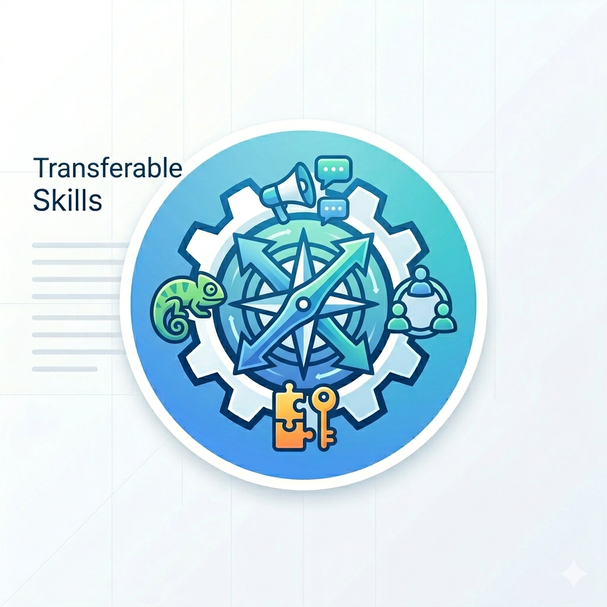

Skills Portfolio
My career has been shaped by three areas of technology I care deeply about: software development, systems analysis, and network infrastructure. Over the years, these disciplines have not just defined my work — they have informed how I think about technology and the problems it can solve.
At my core, I am a problem solver. Throughout my career I have worked directly with clients to untangle complex challenges, bridge the gap between business needs and technical realities, and deliver solutions that actually stick.
I invite you to visit my LinkedIn profile for a fuller account of how these disciplines have shaped my roles and the teams I have been part of.
Software Development Track
I have been writing code since I was twelve. Professionally, that curiosity grew into a career as a lead developer across a wide range of projects — from CRM platforms to EDI integration systems — each one teaching me something the last one did not.
DevOps and SysOps Skills
My two core disciplines — software development and infrastructure — converged naturally as cloud technology matured. What started as managing traditional virtual machines evolved into working with Docker and Kubernetes, and CI/CD pipelines became a central part of how I think about delivering software.
In my role as a Site Reliability Engineer, infrastructure as code became second nature — primarily through Ansible and CloudFormation. Skills I had built over years, like Python scripting and deep Linux knowledge, translated seamlessly into cloud-native work: authoring AWS Lambda functions, building AMIs for immutable infrastructure, and extending a monitoring practice that began with Nagios and Grafana into CloudWatch and modern observability platforms. More recently, I have been incorporating AI-assisted tooling to build smarter dashboards and alerting systems.
Systems Analyst Skills
Gathering requirements, documenting solutions, and translating business needs into clear technical specifications has always been central to how I work. This section reflects my involvement in systems analysis across a range of industries and organizations, and the discipline I have brought to that process throughout my career.
IT Solutions Implementation and Support
As a systems administrator and network analyst, I have hands-on experience designing, implementing, and maintaining on-premises environments — including application servers, database servers, and mail servers across both Linux and Windows platforms.
Universidad Mesoamericana (UMESAG)
2003 – 2005
I completed the Master of Business Administration program — a two-year graduate degree. This credential has been assessed by IQAS as equivalent to a Master of Business Administration (MBA) in the province of Alberta.
Universidad Francisco Marroquín (UFM Guatemala)
1994 – 2000
I completed the Licenciatura en Informática, a five-year undergraduate program with a strong focus on software development, systems analysis, and information systems management. This credential has been assessed by IQAS as equivalent to a Bachelor of Science in Computer Science in the province of Alberta.
EvolveU — Full Stack Development — Second Cohort
2019 · Calgary, AB
In 2019, I joined EvolveU's intensive full-stack development program in Calgary as part of its second cohort, with the aim of refreshing and expanding my development skill set through a hands-on, project-based curriculum. What set the program apart was its broader emphasis on how people think — systems thinking, design thinking, and critical thinking were woven throughout, preparing graduates to approach complex problems with perspective, not just tools.
The curriculum covered a broad range of modern technologies, including JavaScript ES6, React, Python, Flask, Node.js, Express, Amazon AWS, PostgreSQL, Java, Unreal Engine, and mobile development with React Native.
EvolveU has since grown and rebranded as InceptionU, continuing to develop well-rounded, future-ready technology professionals right here in Calgary.

Tech Skills
Hands-on development experience in C#, Java, PHP, Visual Basic, and Python
Extensive work with multiple database platforms and EDI integration projects
Implemented and supported back-office infrastructure including servers, MTAs, and application servers on both Windows and Linux

Transferable Skills:
- Fluent in Spanish and English; operational proficiency in French
- Experienced in delivering and facilitating technical presentations and training
- Adept at solving problems in both technical and client-facing environments